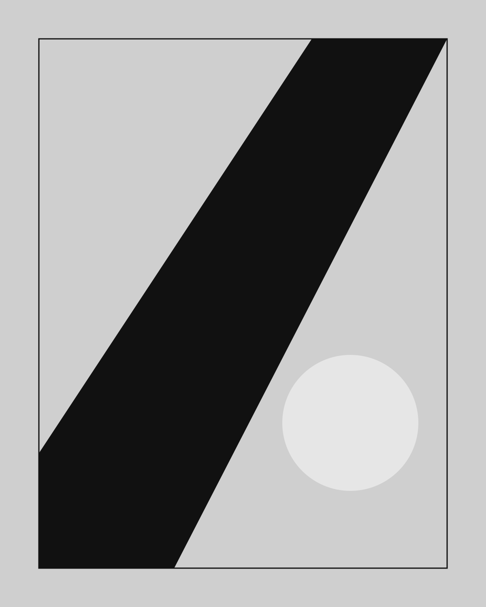

jo yamazaki
Product Designer
2005Born in Tokyo
2027Graduated from Musashino Art University, Department of Industrial, Interior and Craft Design
2027Joined ASICS Corporation


Product Designer
2005Born in Tokyo
2027Graduated from Musashino Art University, Department of Industrial, Interior and Craft Design
2027Joined ASICS Corporation